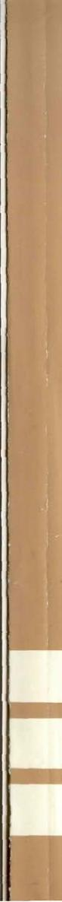

About this transcription
Late in 2001, Justin started the first known efforts to transcribe this rare out of print book in an attempt to share in Dr. Gilmartin’s hope “that it reaches as many afflicted people as possible.” Unfortunately, by early 2004 merely 1 th 5
of the full transcription was completed. Justin transcribed the material which seemed most interesting and beneficial to him. Alas, most everyone has slightly different interests and would therefore have chosen a slightly different subset of the book for transcription. Justin had left the “community”. In all this time, there has been only one new chapter due to a single external contribution. Many very interesting chapters were still out of reach.
If you want something done right, you gotta do it yourself. Unhoped for, I did manage to obtain an original copy from a large library. They only had one copy. This copy was used to create this 100% digital clone from the ground up.
Spelling mistakes by Dr. Gilmartin were left intact, too. ;) My aim with this project has always been to make this invaluable book easily available to anyone who dearly needs it. And that means free of charge by legal means.
But even with the best tools, a huge project like this does take quite a lot of effort! If you reap any benefits from reading this transcription, I’d highly appreciate an e-gold donation (totally anonymous if desired) for my dedication to get this book transcription project done once and for all. Donate as much or as little as you can. Anything is appreciated!
($10)
(join http://www.e-gold.com) ($20)
(arbitrary amount to 1279251)
This project is shared with full consent of copyright owner Dr. Brian G.
Gilmartin. Please see his enclosed letter on the next page.
Feel free to contact me should you have any comments regarding this project.
All that said, enjoy reading and may the love be with you!
Best wishes
seth seth gobin@yahoo.com 2004/03/19
Digitally signed by Seth Gobin
Date: 2004.03.19 21:58:46 +01'00'
Reason: I attest to the accuracy and integrity of this document Signature Not Verified
Justin’s yahoo group
http://groups.yahoo.com/group/loveshy drgilmartin/
loveshy community site
wikipedia definition
http://en.wikipedia.org/wiki/Loveshyness

This book represents the
most thoroughgoing and comprehensive research investigation ever
published on the subject of shyness
and social timidity. It is also the
first scholarly study ever attempted
on heterosexual men who are
strongly desirous of marriage but
who are too shy to assert themselves with or socialize with women
on an informal basis.
A total of 300 severely shy,
virginal men were studied for this
book, 100 of whom were between
the ages of 35 and 50, and 200 of
whom were between the ages of 19
and 24. For comparison purposes a
group of 200 non-shy men was also
studied.
This book focuses upon the
sociological, psychological, neurological and biochemical antecedents of such life-debilitating shyness.
It also looks at the consequences
that such shyness holds for personal life style, employment, interaction with friends and kin, and for
general well-being.
Dr. Gilmartin emphasizes the
importance for shyness of inborn
brain biochemistry and neurology.
But he also believes that behavior
SHYNESS AND LOVE:
Causes, Consequences, and Treatment
By Dr. Brian G. Gilmartin
UNIVERSITY
PRESS OF
AMERICA
Lanham • New York • London
Copyright ©1987 by
University Press of America, • Inc.
4720 Boston Way
Lanham, MD 20706
3 Henrietta Street
London WC2E 8LU England
All rights reserved
Printed in the United States of America
British Cataloging in Publication Information Available Library of Congress Cataloging-in-Publication Data Gilmartin, Brian G.
Shyness and love.
Bibliography: p.
Includes index.
1. Single men—Psychology. 2. Bashfulness.
3. Love. 4. Interpersonal relations. I. Title.
HQ800.3.G55 1987 305'.90652 86-33658
ISBN 0-8191-6102-0 (alk. paper)
All University Press of America books are produced on acid-free paper which exceeds the minimum standards set by the National Historical Publication and Records Commission.
This book is dedicated to the promotion of responsible free choice and self-determination—something to which all human beings everywhere ought to be fully entitled.
This book is dedicated to three people: (1) To Ms. (soon to be Dr.) Allegra Patten, a more breathtakingly spectacular and totally unforgettable "natural wonder" than Machu Picchu. Dedicated to Allegra with all of my deepest and most eternal love.
(2) To Mr. Taras "the Gnome" Fortuna of Bradford, West York-shire, England, my favorite male friend.
(3) To Mr. George V. Gilmartin, my father, without whose help this project would never have been possible.
No project of this size and scope could be brought to a successful conclusion without the help, emotional support and encouragement of a great many people. It was most heartening to me to find that many people are deeply interested in the loveshyness problem and in helping to find ways of effectively solving it. And it is my most sincere hope that this book will serve to strongly stimulate a burgeoning in research efforts on loveshyness and on ways of painlessly remediating the problem for those who are most severely afflicted with it.
First I'd like to thank Dr. Murray Adams, professor and chairperson of the sociology department at Auburn University, for his help in getting me the grant which permitted this project to be launched in the first place. In addition, I shall always be very grateful to Dr. John P. Garrison and Dr. David Clavier of the speech communication department at Auburn for their encouragement and for their never-ending flow of stimulating ideas.
I also owe a debt of gratitude to my current colleagues at Westfield State College in Massachusetts. In particular, Dr. Mostafa Noury, Dr.
Larry Levitt, and Dr. David Miller of the sociology department, Dr.
Joseph Tobia of Media Studies, and Dr. Joseph Connolly of the psychology department, have all been sources of valuable encouragement and creative ideas.
And I shall always remain grateful to Professor Hallowell Pope of the University of Iowa, and to Professor Ira L. Reiss of the University of Minnesota (under whose direction I took my Ph.D. a decade ago), for the endless supply of stimulating ideas, support and encouragement they have been able to provide. Special thanks are also due to my long-time friend Dr. Roger W. Libby of the University of Massachusetts at Amherst, for his many stimulating and provocative conversations. And I want to thank Dr. Robert Leik of the University of Minnesota for the interest and encouragement he showed towards this project during its early stages.
vii
My "California connection" has also been of considerable importance to me throughout the duration of this study. And I would particularly like to thank Dr. Paul Leon Mastarakos, Dr. Hazel Hampton, Dr.
Frankie Mitchell, Dr. Henry Anderson, Dr. James Carroll, Dr. Franz Adler, and Dr. William Larson, for their helpful support. And in the U.K. there is Mr. Taras "Gnome" Fortuna, who has supplied me with a steady flow of inspiration along with the chance to derive some further quite useful stimulation from "the birds of Blackpool."
Further, even though there is much about their approaches to the subject of loveshyness with which I disagree, I owe a debt of gratitude to Dr. Philip Zimbardo of Stanford University, and to Dr. Letitia Anne Peplau of University of California at Los Angeles, for giving me a much needed "intellectual shot in the arm." Their work as well as the work of Dr. Hal Arkowitz, Dr. Andrew Christensen, Dr. Paul Pilkonis, Dr.
William Martinson, Dr. Craig Twentyman, and Dr. Joseph Melnick, did much to stimulate my thinking. Without their work and the invaluable scholarly contributions of Dr. Hans Eysenck, Dr. Alexander Thomas, Dr. Thomas J. Bouchard, Jr., and Dr. Jerome Kagan, this book would not have been possible.
Finally (and most importantly), I wish to thank the 500 men who so willingly opened up their lives to me so that this book could be written in a meaningful manner. Assurances of anonymity render it impossible for me to mention any names. However, I shall always be enormously grateful to the many people who so generously gave of their time and who bestowed upon me and upon the "loveshyness project" a very great deal of personal trust and support. This book is dedicated to these men. Simply put, the 500 interviewees were more instrumental than anybody in assuring the successful completion of this book. I learned a very great deal from them, and I feel very confident that each and every reader of this book will do so as well.
DR. BRIAN G. GILMARTIN
Department of Sociology,
Westfield State College,
Westfield, MA 01086
January 27, 1985
Acknowledgments vii
List of Figures xix
Preface xxi